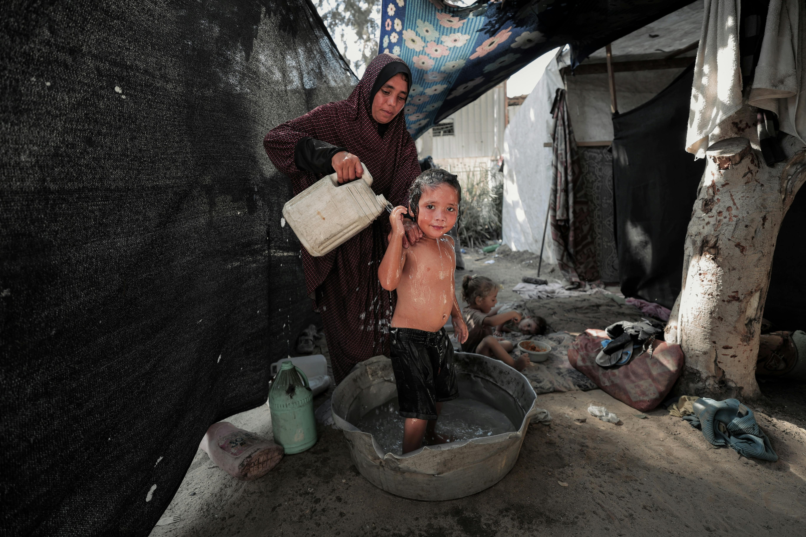

Executive Summary
Al-Jawzat Camp is one of the largest displacement hubs in Gaza, housing over **7,000 families** within a complex network of internal sub-camps. Due to extreme overcrowding, dermatological infections have emerged as a significant threat to child health. This workshop was executed as a proactive measure to curb outbreaks by empowering the camp's female leadership and caregivers.

Water Scarcity & Hygiene Management
Field assessments identified water scarcity as the primary barrier to sanitation. The workshop focused on teaching alternative sterilization methods, such as utilizing direct sunlight (UV disinfection) as a technical substitute for chemical cleaners in resource-poor settings.
- Sunlight-exposure protocol for bedding.
- Spatial separation techniques within tents.
Key Workshop Outcomes
Clinical Identification
Enabled 80 participants to distinguish between contagious parasitic infections and environmental allergies.
Monitoring Network
Activated the "Women's Affairs Committee" as a rapid-response surveillance hub for the camp's sectors.
"In the displacement camps, an ounce of prevention is worth a ton of medicine that simply isn't there."
— Abdulrahman Shunnar
Technical Recommendations
Logistics: Immediate scaling of "Dermatology Dignity Kits" to all seven sectors of Al-Jawzat.
Engineering: Improving surface drainage between tents to reduce humidity-driven fungal growth.